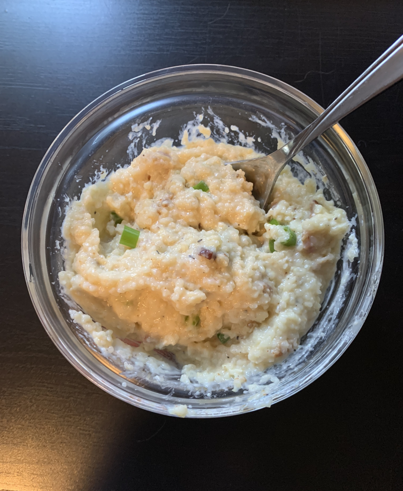

Bacon Gouda Grits

Description
These savory grits are my go-to when I don't have a lot of time to cook, but still want more than cereal or a bar for breakfast. They're easy to make, and can be eaten on their own or topped with a fried egg for added protein.
I usually get all my ingredients from Aldi, so that's what my cooking times are based on. You can adjust as needed based on the cook times listed on the grits you're using.
Serves 4-6
Ingredients
- 3 cups water
- 1 cup milk
- 2 tablespoons "Better Than Bouillon"
- 1 cup dry quick grits
- 6-8 slices cooked, crumbled bacon
- 4 ounces shredded gouda
- 4 tablespoons butter or 2-4 tablespoons bacon fat
- Seasonings (to taste): salt, pepper, onion powder, paprika, cayenne
- Toppings (optional): sour cream, chives, crumbled bacon
Directions
- Pour milk, water, and Better Than Bouillon into a medium saucepan and bring to a boil.
- Stir in grits and seasonings until fully saturated, then cover and reduce heat to medium-low.
- Cook covered for 5-7 minutes, stirring at 5 to check consistency and prevent burning.
- Turn off heat and stir in shredded gouda until it's fully incorporated.
- Stir in butter or bacon fat and crumbled bacon.
- Optional: Stir in sour cream for a smoother consistency.
- Serve topped with additional bacon crumbles, fresh cut chives, and a dollop of sour cream.